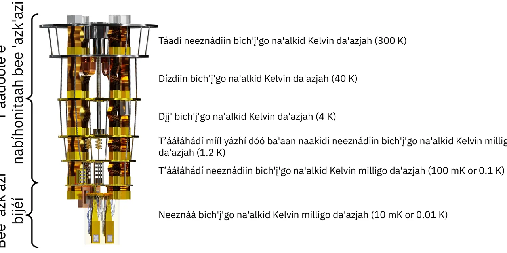

양자컴퓨팅 미국 대표주를 비교할 때 가장 흔한 실수는 네 회사를 같은 차트 위에 올려놓고 “누가 제일 많이 오를까”만 묻는 것입니다. 아이온큐, 퀀텀 컴퓨팅, 디 웨이브 퀀텀, 리게티 컴퓨팅은 모두 양자컴퓨팅 테마에 묶이지만 실제로는 팔고 있는 기술, 고객에게 제시하는 효용, 주가가 반응해야 할 숫자가 다릅니다. 그래서 주가 전망도 한 줄로 정리하면 틀리기 쉽습니다.
현재 기준으로 가장 먼저 봐야 할 질문은 “기술이 멋진가”가 아니라 “그 기술이 고객 계약과 매출로 얼마나 빨리 바뀌고 있는가”입니다. 양자컴퓨터는 아직 초기 시장입니다. 큐비트 수가 늘고, 논문과 데모가 좋아져도 주주는 결국 매출, 예약, RPO, 백로그, 현금, 손실, 희석 가능성을 확인해야 합니다. 이 여섯 가지가 주가의 상단과 하단을 동시에 정합니다.
큰 결론부터 말하면 실행 가시성은 아이온큐가 가장 앞에 있습니다. 단기 상업 수요의 숫자 신호는 디 웨이브가 흥미롭습니다. 기술 베타와 초전도 확장성에 베팅한다면 리게티가 더 민감하게 움직일 수 있습니다. 현금과 포토닉스 제조 선택지를 본다면 퀀텀 컴퓨팅은 독특한 옵션입니다. 다만 네 종목 모두 현재 이익보다 기대가 먼저 가격에 반영되는 구간이므로, 상승 전망만큼 하락 변동성도 같이 봐야 합니다.
비교의 출발점은 큐비트 숫자가 아닙니다

양자컴퓨팅 기업을 볼 때 큐비트 숫자는 필요하지만 충분하지 않습니다. 큐비트가 많아도 오류율이 높고, 시스템 접근성이 낮고, 고객 문제를 풀지 못하면 매출로 연결되기 어렵습니다. 반대로 큐비트 수가 압도적이지 않아도 특정 최적화 문제, 연구기관 장비 판매, 클라우드 사용량, 국방·정부 계약이 붙으면 주가는 먼저 반응할 수 있습니다.
아이온큐는 이온트랩 방식으로 비교적 높은 품질의 큐비트와 네트워킹·센싱 확장을 강조합니다. 리게티는 초전도 방식과 자체 칩 제조, 클라우드 접근성을 내세웁니다. 디 웨이브는 어닐링 양자컴퓨팅에서 출발해 게이트 모델까지 넓히며 기업 최적화 문제를 전면에 둡니다. 퀀텀 컴퓨팅은 회사명만 보면 순수 양자컴퓨터 기업처럼 보이지만, 실제 투자 포인트는 양자 광학, 포토닉스, 보안·센싱·이미징 응용에 더 가깝습니다.
이 차이를 무시하면 종목 비교가 흐려집니다. 아이온큐와 리게티는 “범용 양자컴퓨터로 어디까지 확장할 수 있느냐”에 가깝습니다. 디 웨이브는 “지금 고객이 돈을 내는 최적화 문제를 얼마나 반복 계약으로 만들 수 있느냐”에 가깝습니다. 퀀텀 컴퓨팅은 “포토닉스 제조와 양자 광학 응용을 실제 제품 매출로 바꿀 수 있느냐”가 핵심입니다. 같은 양자컴퓨팅이라는 이름 아래 네 개의 시험지가 다른 셈입니다.
| 종목 | 핵심 기술 방향 | 주가가 좋아지는 조건 | 가장 큰 확인 지점 |
|---|---|---|---|
| IONQ 아이온큐 | 이온트랩, 양자 네트워킹, 센싱 | RPO가 매출과 마진으로 전환됩니다 | 대형 계약의 인식 속도와 손실 축소입니다 |
| QUBT 퀀텀 컴퓨팅 | 양자 광학, 통합 포토닉스, 보안·센싱 | 현금이 제품 매출과 백로그 전환으로 연결됩니다 | Fab 1, 인수 통합, 매출총이익입니다 |
| QBTS 디 웨이브 퀀텀 | 어닐링, QCaaS, 게이트 모델 보강 | 예약과 RPO가 12개월 매출로 바뀝니다 | Advantage2 설치와 고객 반복성입니다 |
| RGTI 리게티 컴퓨팅 | 초전도 큐비트, 칩렛, 자체 Fab | Cepheus 사용량과 Novera 판매가 반복됩니다 | 클라우드 사용량과 영업손실입니다 |
기술 방식은 네 갈래로 갈리지만 돈은 계약 전환에서 보입니다
관련 영상
아이온큐 방식과 리게티 방식 등 양자컴퓨터 기술 차이를 비교하는 한국어 롱폼 영상
기술적으로 가장 정통적인 양자컴퓨팅 경쟁을 보는 투자자는 아이온큐와 리게티를 먼저 비교하게 됩니다. 아이온큐의 이온트랩 방식은 큐비트 품질과 연결성, 네트워킹 확장성에서 강점을 주장합니다. 리게티의 초전도 방식은 반도체 제조와 비슷한 확장 논리, 빠른 게이트 동작, 자체 Fab를 통한 반복 개선을 이야기합니다. 둘의 우열은 단순 큐비트 수보다 시스템 안정성, 오류율, 고객 접근성, 반복 판매에서 갈립니다.
디 웨이브는 비교 기준이 조금 다릅니다. 어닐링 방식은 범용 게이트 모델 양자컴퓨터와 같은 문제를 풀겠다는 접근이 아니라, 특정 최적화 문제를 빠르게 풀겠다는 실용 축에 가깝습니다. 회사가 예약과 RPO를 강조하는 이유도 여기에 있습니다. 완벽한 범용 양자컴퓨터가 나오기 전에도 고객이 최적화 문제에 돈을 내면 사업은 먼저 굴러갈 수 있습니다.
퀀텀 컴퓨팅은 다시 다른 표를 봐야 합니다. 이 회사는 양자컴퓨팅이라는 이름보다 포토닉스 제조, 박막 리튬나이오베이트, 양자 광학 응용, 보안·센싱·이미징 시장을 같이 봐야 합니다. 투자자가 QUBT를 IONQ와 같은 방식으로만 비교하면 핵심을 놓칠 수 있습니다. QUBT의 전망은 “범용 양자컴퓨터 1등”보다 “포토닉스 제품이 초기 매출을 얼마나 빨리 만든다”에 더 가깝습니다.
따라서 기술 비교의 결론은 하나입니다. IONQ는 플랫폼 신뢰도, RGTI는 제조 확장성, QBTS는 기업 최적화 수요, QUBT는 포토닉스 응용 매출로 봐야 합니다. 네 종목의 주가가 같이 오르는 날은 양자컴퓨팅 테마 장세일 수 있지만, 오래 버티는 종목은 각자 다른 숫자로 증명됩니다.
실적 비교는 아이온큐가 앞서지만 손실과 기대치도 큽니다
아이온큐의 2026년 1분기 발표에서 가장 눈에 띄는 숫자는 매출 6,470만 달러, RPO 4억7,000만 달러, 현금·투자자산 31억 달러입니다. 이 숫자만 보면 네 회사 중 사업 규모와 계약 가시성이 가장 앞서 있습니다. 하지만 같은 발표 안에는 1분기 조정 EBITDA 손실 9,680만 달러와 연간 조정 EBITDA 손실 전망 3억1,000만~3억3,000만 달러도 들어 있습니다. 아이온큐는 선두주자 프리미엄을 받을 수 있지만, 그 프리미엄을 유지하려면 RPO가 실제 매출과 마진으로 바뀌어야 합니다.
디 웨이브의 2026년 1분기 발표는 다른 장점이 있습니다. 매출은 290만 달러로 작지만 예약은 3,340만 달러, RPO는 4,240만 달러였습니다. 특히 회사는 RPO의 약 54%가 다음 12개월 안에 매출로 인식될 것으로 설명했습니다. 이 숫자가 맞게 흘러가면 디 웨이브는 “양자컴퓨팅이 아직 먼 이야기”라는 의심을 일정 부분 줄일 수 있습니다. 반대로 예약이 매출로 바뀌지 않으면 주가는 쉽게 실망할 수 있습니다.
리게티의 2026년 1분기 발표는 440만 달러 매출, 약 2,595만 달러 영업손실, 현금·매도가능증권 5억6,900만 달러를 보여줍니다. 리게티는 108큐비트 Cepheus-1-108Q 시스템과 Novera QPU 판매를 내세우지만, 아직 사업 규모는 작습니다. 그래서 리게티 주가는 기술 발표에 민감하게 움직일 수 있으나, 장기 전망은 클라우드 사용량과 반복 판매가 따라와야 안정됩니다.
퀀텀 컴퓨팅의 2026년 1분기 발표는 현금·투자자산 약 14억 달러와 매출 약 370만 달러, 계약 백로그 약 1,600만 달러를 함께 보여줍니다. 현금만 보면 상당히 강합니다. 그러나 주가 전망은 현금 보유 자체가 아니라 그 현금이 Luminar Semiconductor와 NuCrypt 인수, Fab 1 생산, NeuraWave와 Dirac-3 같은 제품 매출로 이어지는지에서 갈립니다. 현금은 시간을 사주지만, 매출 전환을 대신해 주지는 않습니다.
| 종목 | 2026년 1분기 핵심 숫자 | 좋게 보는 근거 | 조심할 근거 |
|---|---|---|---|
| IONQ | 매출 6,470만 달러, RPO 4억7,000만 달러, 현금·투자자산 31억 달러 | 계약 가시성과 자금력이 큽니다 | 조정 EBITDA 손실이 큽니다 |
| QBTS | 매출 290만 달러, 예약 3,340만 달러, RPO 4,240만 달러 | 예약 증가와 12개월 매출 전환 기대가 있습니다 | 현재 매출 규모는 작습니다 |
| RGTI | 매출 440만 달러, 영업손실 약 2,595만 달러, 유동성 5억6,900만 달러 | 초전도 칩렛 로드맵이 명확합니다 | 고객 사용량과 반복 판매가 더 필요합니다 |
| QUBT | 매출 약 370만 달러, 현금·투자자산 약 14억 달러, 백로그 약 1,600만 달러 | 현금과 포토닉스 선택지가 큽니다 | 인수 통합과 제품 매출 전환을 증명해야 합니다 |
주가 전망은 네 회사의 시간표가 다르다는 점에서 갈립니다
아이온큐의 주가 전망은 네 종목 중 가장 제도권 성장주에 가깝습니다. 이미 매출과 RPO가 의미 있는 규모로 커졌기 때문에 시장은 “가능성”보다 “전환 속도”를 보게 됩니다. 주가가 더 좋아지려면 256큐비트 시스템 판매와 대형 계약이 매출로 인식되고, 조정 EBITDA 손실이 관리 가능하다는 신호가 나와야 합니다. 반대로 RPO 성장률이 둔화되거나 SkyWater 통합 비용이 커지면 선두주자 프리미엄이 줄어들 수 있습니다.
디 웨이브는 단기 숫자 전환에 가장 민감합니다. 예약과 RPO는 이미 투자자가 볼 만한 신호를 만들었습니다. 문제는 예약이 실제 매출과 매출총이익으로 이어지는지입니다. Advantage2 설치, QCaaS 사용량, 상업 고객 반복 계약이 확인되면 주가는 “실용 양자컴퓨팅”이라는 테마로 재평가될 수 있습니다. 그러나 매출 인식이 늦어지고 인수 비용이 커지면 예약 숫자는 기대만 남긴 채 부담이 될 수 있습니다.
리게티는 기술 베타가 큽니다. 초전도 방식은 확장성 이야기가 매력적이고, Cepheus-1-108Q와 클라우드 접근은 투자자에게 명확한 관전 포인트를 줍니다. 주가가 강해지려면 클라우드 사용량, Novera QPU 반복 판매, 시스템 안정성, 영업손실 관리가 함께 나와야 합니다. 리게티는 좋은 기술 발표 하나로 빠르게 움직일 수 있지만, 그만큼 실적 확인이 늦으면 되돌림도 클 수 있습니다.
퀀텀 컴퓨팅은 현금과 포토닉스 옵션을 보는 종목입니다. 14억 달러 규모의 현금·투자자산은 초기 기술 기업에게 큰 방어막입니다. 하지만 QUBT의 주가 전망은 그 돈이 실제 제품과 고객으로 연결될 때 밝아집니다. Fab 1 매출, 백로그 전환, 인수한 기술의 통합, 매출총이익률 개선이 나와야 합니다. 현금이 많다는 이유만으로 주가가 오래 버티지는 않습니다. 현금은 실험 시간을 늘려줄 뿐, 실험 결과를 대신하지 않습니다.
네 종목을 고르는 순서는 투자 성격에 따라 달라집니다
가장 보수적으로 양자컴퓨팅 대표주를 고르고 싶다면 아이온큐가 먼저 검토 대상입니다. 매출, RPO, 현금 규모가 가장 크고, 회사가 제시하는 제품 범위도 넓습니다. 다만 이미 많은 기대가 반영된 종목일수록 “좋은 회사”와 “좋은 진입점”은 다를 수 있습니다. 아이온큐는 성장률뿐 아니라 손실 축소와 계약 인식 속도가 같이 좋아져야 합니다.
실제 기업 수요가 먼저 숫자로 잡히는 회사를 찾는다면 디 웨이브가 흥미롭습니다. 예약과 RPO가 매출보다 먼저 움직이고 있기 때문입니다. 다만 디 웨이브는 어닐링 중심이라는 특수성이 있어 범용 양자컴퓨팅 기대와는 다른 프레임으로 봐야 합니다. 이 회사는 “양자컴퓨터 전체 1등”보다 “최적화 문제를 돈 내는 고객에게 파는 회사”로 보는 편이 더 정확합니다.
기술 확장성과 주가 변동성을 함께 감수할 수 있다면 리게티가 별도 후보가 됩니다. 초전도 방식과 자체 Fab는 매력적인 이야기지만, 지금은 그 이야기를 고객 사용량과 매출로 바꾸는 단계입니다. 리게티는 잘 맞으면 강하게 움직일 수 있지만, 숫자가 약하면 주가가 기술 발표를 오래 붙잡지 못할 수 있습니다.
현금과 포토닉스 제조 선택지를 보고 싶다면 퀀텀 컴퓨팅은 네 번째 축입니다. QUBT는 비교적 독특한 포지션을 갖고 있어 순수 양자컴퓨팅 경쟁만으로 재단하면 안 됩니다. 다만 투자자는 “현금이 많다”에서 멈추지 말고 “그 현금이 매출총이익이 있는 제품으로 바뀌는가”를 봐야 합니다.
정리하면 네 종목의 밝은 전망은 서로 다른 문장으로 써야 합니다. 아이온큐는 계약이 매출로 바뀔 때, 디 웨이브는 예약이 12개월 안에 실적에 들어올 때, 리게티는 클라우드 사용량과 반복 판매가 생길 때, 퀀텀 컴퓨팅은 포토닉스 제품이 현금 규모에 어울리는 매출로 바뀔 때 전망이 밝아집니다. 양자컴퓨팅 테마가 다시 강해질 때 모두 오를 수는 있지만, 오래 남는 주가는 각 회사가 자기 방식의 숫자를 증명할 때 만들어집니다.